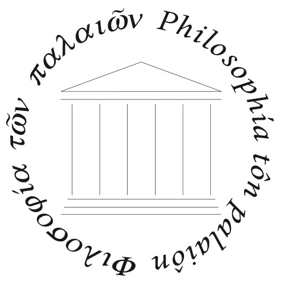

orientaTO

Filosofia
Laurea Triennale
Il corso di laurea triennale in Filosofia si propone di dare agli studenti una panoramica generale del pensiero filosofico, dall'antichità ad ora, nella prospettiva di approfondire con gli studi specialistici il percorso che più interessa. Il corso di laurea aspira a fornire agli studenti una padronanza del pensiero filosofico occidentale secondo le linee di una rigorosa criticità filologica e bibliografica. Mira inoltre a coonferire agli studenti gli strumenti per l'analisi dei problemi più diversi oltre che all'uso delle modalità argomentative, nella prospettiva di un giudizio critico sulle discipline oggetto di studio. Alla fine del corso, i laureati in filosofia avranno sviluppato la capacità di elaborare e analizzare discorsi, argomentazioni e pensieri, oltre ad avere acquisito essenziali abilità informatiche e competenze di base in due lingue straniere.
Requisiti di ammissione
Il Corso di studi in Filosofia è ad accesso non programmato. Per essere ammessi al Corso di studi occorre essere in possesso
di un diploma di scuola secondaria superiore di durata quinquennale o di altro titolo di studio conseguito all'estero,
riconosciuto idoneo ai sensi delle leggi vigenti.
Per poter frequentare lo studente dovrà essere in possesso di un’adeguata preparazione iniziale. In particolare dovrà aver maturato
abilità analitiche (abilità di ragionamento logico), conoscenze relative alla storia e alla cultura occidentali che si possono acquisire
negli studi secondari superiori e dovrà essere in grado di comprendere testi propedeutici allo studio della filosofia e delle scienze umane.
Egli dovrà, inoltre, saper cogliere gli elementi strutturali di argomentazioni filosofiche e dei procedimenti che, da asserzioni di determinate
premesse, portano a trarre determinate conclusioni.
ATTENZIONE: sebbene il corso non sia a numero progrmmato, sarà comunque necessario sostenere il Test di accertamento dei requisiti minimi (Tarm).
La prova si svolgerà mediante strumento informatico, e prevederà la somministrazione di test a risposta multipla attraverso la rete Internet,
sulla base di un vasto repertorio di domande conformi alle esigenze del Corso di studi. La prima parte conterrà domande di lingua italiana, grammatica, ortografia, sintassi. La seconda parte
prevederà domande di cultura lessicale e di comprensione dei testi. Gli studenti insufficienti nella prima parte del test saranno avviati
al recupero on-line dei debiti di italiano. Gli studenti insufficienti nella seconda parte del test saranno avviati a una settimana
di lezioni di recupero di proprietà lessicali specifiche e comprensione del testo.
Una volta soddisfatti tutti i requisiti richiesti dall'Università, si può procede con l'immatricolazione ed al pagamento delle
tasse, senza i quali non si è studenti regolari.
Profili professionali
I laureati di questo corso potranno vantare competenze a capacità trasversali adattabili in diversi ambiti profesionali: ad esempio avranno i requisiti per assumere compiti e funzioni nella Pubblica Amministrazione, in enti pubblici e privati, potranno trovare impiego nell'editoria, con particolare riferimento all'ambito umanistico, e nell'ambiente pubblicitario, nel campo della promozione culturale, della comunicazione pubblica e nell'insegnamento nella scuola secondaria. Il corso prepara inoltre a proseguire gli studi in lauree magistrali di ambito filosofico e di scienze storiche, politiche, religiose.
Percorso formativo
Il curriculum di filosofia prevede lo studio di discipline filosofiche, storiche e teoriche. Rende possibile lo studio integrativo delle discipline letterarie e linguistiche, psicologiche, storiche, etno-antropologiche e sociologiche, di materie scientifiche complementari e della storia della scienza. La filosofia si confronta con la storiografia e la teoria politica, con la teologia e gli studi religiosi. Riflette sull'arte, sul linguaggio e sulla comunicazione. Indaga i fondamenti logici del ragionamento e ha importanti punti di contatto con le scienze fisico-matematiche, le discipline bio-mediche egli sviluppi delle scienze cognitive contemporanee.
Aree di approfondimento
Area di apprendimento 1: storico-filosfico – storico-scientifico- storico-culturale
Insegnamenti volti ad acquisire conoscenze e competenze nei diversi ambiti della ricerca filosofica e della storia della cultura:
storico-filosofico, teoretico, logico-filosofico-scientifico, estetico, etico-morale, storico- scientifico, storico-istituzionale,
storico-artistico. Apprendimenti accertati attraverso: esami dei singoli insegnamenti, prove intermedie, test, attività, laboratori di
lettura e scrittura volti ad applicare le conoscenze e le competenze acquisite.
Area di apprendimento 2: metodologico, teorico-tematico
Insegnamenti volti ad acquisire conoscenze e competenze nei diversi ambiti della ricerca filosofica e della storia della cultura:
storico-filosofico, teoretico, logico-filosofico-scientifico, estetico, etico-morale, storico- scientifico, storico-istituzionale,
storico-artistico. Apprendimenti accertati attraverso: esami dei singoli insegnamenti, prove intermedie, test, attività, laboratori di
lettura e scrittura volti ad applicare le conoscenze e le competenze acquisite.
Area di apprendimento 3: discipline affini alla filosofia
Insegnamenti volti a suscitare e potenziare progressivamente la capacità di comprendere i nessi teorici e i collegamenti storici tra la
filosofia e discipline diverse (letterature, discipline storiche, artistiche, scientifiche, psicologiche, pedagogiche demo-antropologiche, ecc.).
Attività che mettano lo studente in grado di applicare metodi interpretativi ed espositivi acquisiti nell'ambito della formazione filosofica a
testi complessi e contenuti culturali di argomento non strettamente filosofico, di scomporre, analizzare, sintetizzare, formalizzare un'argomentazione
complessa indipendentemente dallo specifico contenuto culturale. Insegnamenti e laboratori didattici orientati all'acquisizione e al corretto
uso dei computer e delle reti e alla conoscenza dei metodi di rappresentazione digitale dell'informazione e di elaborazione automatica dei dati
nel campo della ricerca umanistica.Apprendimenti accertati attraverso: esami dei singoli insegnamenti, prove intermedie, test, attività,
laboratori di lettura e scrittura volti ad applicare le conoscenze e le competenze acquisite.
Visita il sito ufficila per prendere visione dell'offerta didattica della Laurea Triennale in Filosofia dell'Unito, e trovare tutti gli aggiornamenti che ogni anno vengono apportati al piano didattico.